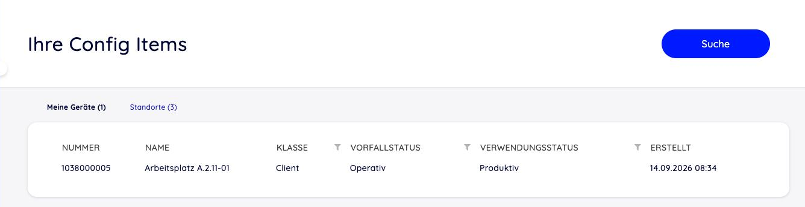
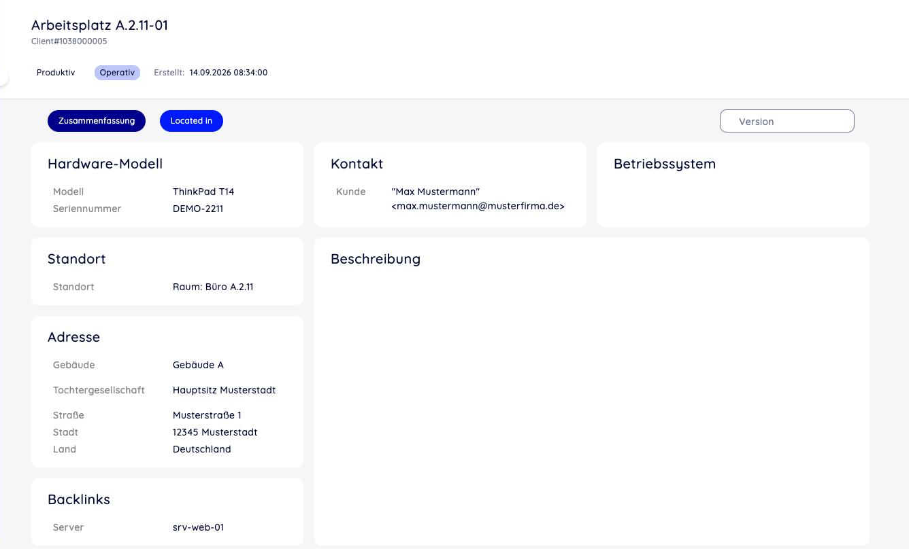

Config Items im Kundenportal¶
Kundenbenutzer können Config Items im Kundenportal ansehen und durchsuchen — etwa „meine Geräte“ oder „die Verträge unserer Firma“. Bearbeiten können Kunden nichts. Welche Config Items ein Kunde sieht, bestimmen ausschließlich die Berechtigungsbedingungen (siehe Zugriff für Kunden).
Freischalten¶
Die CMDB-Masken des Kundenportals sind ab Werk ausgeschaltet. Zum Aktivieren diese drei Einstellungen auf gültig setzen:
CustomerFrontend::Module###CustomerITSMConfigItemÜbersicht
CustomerFrontend::Module###CustomerITSMConfigItemSearchSuche
CustomerFrontend::Module###CustomerITSMConfigItemZoomDetailansicht
Der Menüeintrag (CustomerFrontend::Navigation###CustomerITSMConfigItem###003-ITSMConfigItem)
und das Herunterladen von Anhängen
(CustomerFrontend::Module###CustomerITSMConfigItemAttachment) sind bereits
aktiv.
Danach mindestens eine Berechtigungsbedingung aktivieren —
Customer::ConfigItem::PermissionConditions###01 bis ###05. Ohne
aktive Bedingung sieht ein Kunde kein einziges Config Item, auch wenn die Masken
eingeschaltet sind.
Und schließlich in der Klassendefinition die Reiter, die Kunden sehen sollen, mit
Interfaces: [Customer] bzw. [Agent, Customer] kennzeichnen (siehe
Interfaces — Agent, Kunde, öffentlich). Ein Reiter ohne Interfaces ist nur für
Agenten sichtbar.
Checkliste:
Die drei Frontend-Module aktivieren.
Mindestens eine
PermissionConditions-Bedingung aktivieren und anpassen.Kunden-Reiter in den Klassendefinitionen freigeben.
Optional: Spalten je Bedingung festlegen.
Übersicht¶

Abb. 16 Übersicht im Kundenportal: ein Reiter je Berechtigungsbedingung¶
Jede aktive Berechtigungsbedingung, die für den Kunden gilt, erscheint als eigener
Reiter — beschriftet mit ihrem Name und der Anzahl Treffer. Eine Bedingung
Name: Meine Geräte mit CustomerUserDynamicField: Contact-User ergibt also
einen Reiter Meine Geräte mit allen Config Items, in deren Feld Contact-User
der angemeldete Kunde eingetragen ist.
Die Liste lädt höchstens 1.000 Config Items je Reiter. Einträge pro Seite:
ITSMConfigItem::Frontend::CustomerOverview###Small (Schlüssel PageShown,
Standard 25).
Spalten¶
Customer::ConfigItem::PermissionConditionColumns###DefaultSpalten für alle Reiter: Nummer, Name, Klasse, Vorfallstatus, Verwendungsstatus, Erstellt.
Customer::ConfigItem::PermissionConditionColumns###01…###05Eigene Spalten für die Bedingung mit derselben Nummer —
###02gilt also für den Reiter der BedingungPermissionConditions###02. Ab Werk ausgeschaltet. Dynamische Felder alsDynamicField_<Feldname>.
Die Spalte Nummer ist immer enthalten.
Bemerkung
Die Zuordnung der Spalten zum Reiter läuft über den Name der Bedingung.
Zwei Bedingungen mit gleichem Namen sollten daher vermieden werden.
Suche¶
In der Suche wählt der Kunde zuerst die Bedingung (den „Bereich“), in dem gesucht wird. Suchfelder sind Nummer, Name und Klasse, außerdem:
ITSMConfigItem::Frontend::CustomerITSMConfigItemSearch###DeploymentState,…###IncidentStateVerwendungs- bzw. Vorfallstatus als Suchfeld anbieten (Standard: nein).
ITSMConfigItem::Frontend::CustomerITSMConfigItemSearch###DynamicFieldDynamische Felder als Suchfelder (
1verfügbar,2standardmäßig eingeblendet).
Warnung
Für die Suche muss die Bedingung Classes angeben. Eine Bedingung ohne
Klassenliste zeigt in der Übersicht zwar alle Klassen, in der Suche meldet das
Portal dafür aber Keine Berechtigung.
Detailansicht¶

Abb. 17 Detailansicht im Kundenportal¶
Angezeigt werden nur Reiter, deren Interfaces ausdrücklich Customer
enthält. Ist Groups angegeben, wird gegen die Kundengruppen geprüft.
ITSMConfigItem::Frontend::CustomerITSMConfigItemZoom###GeneralInfoWelche allgemeinen Angaben im Kopf erscheinen: Klasse, Nummer, Verwendungsstatus, Vorfallstatus, Erstellt, Geändert (je
1oder0).ITSMConfigItem::Frontend::CustomerITSMConfigItemZoom###VersionsEnabledKunden dürfen ältere Versionen ansehen (Standard: ja).
ITSMConfigItem::Frontend::CustomerITSMConfigItemZoom###VersionsSelectableEine Versionsauswahl wird angezeigt (Standard: ja).
Tipp
Sollen Kunden nur den aktuellen Stand sehen, beide Versions-Einstellungen ausschalten. Die Berechtigung wird gegen das Config Item als Ganzes geprüft — ältere Versionen enthalten womöglich Werte, die heute nicht mehr passen.
Die Tabelle der verknüpften Objekte zeigt das Kundenportal nicht. Ein Abschnitt
vom Typ ConfigItemLinks auf einem Kunden-Reiter listet verknüpfte Config Items
dagegen sehr wohl — und zwar ohne eigene Berechtigungsprüfung (siehe
Klassendefinition (YAML)).
OTOBO 11.1
In 11.1 bringt die CMDB zusätzlich eine öffentliche Ansicht ohne Anmeldung
mit (bisher Zusatzpaket ITSMPublicCMDB). Sie ist nur lesend und ab Werk
ausgeschaltet: Die vier Module PublicFrontend::Module###PublicITSMConfigItem…
aktivieren, Bedingungen unter Public::ConfigItem::PermissionConditions###01…05
festlegen (Schlüssel Name, Classes, DeploymentStates,
DynamicFieldValues) und die Reiter mit Interfaces: [Public] freigeben.